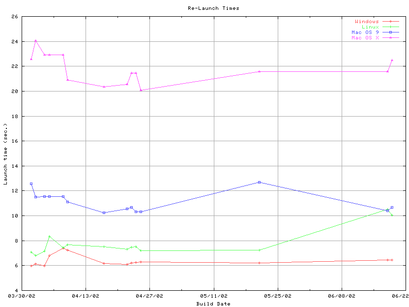
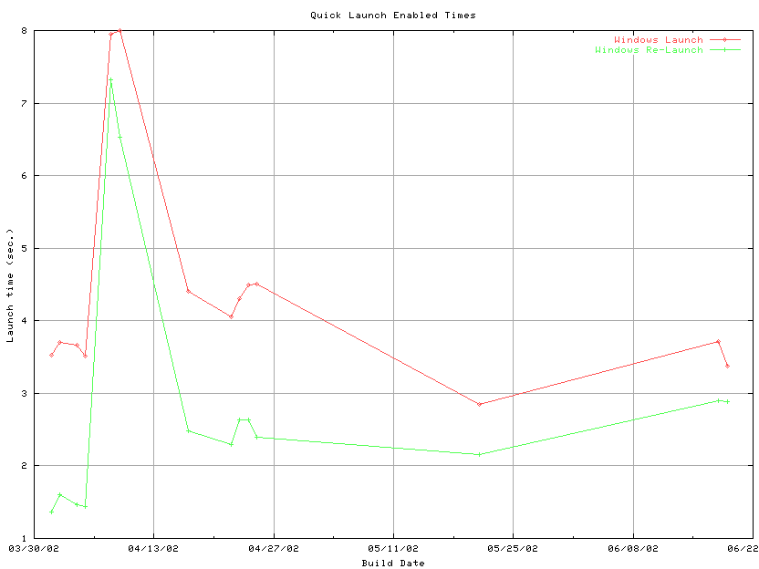

Create by paw on 3/29/2001
Updated on 06/19/2002
Overview: The table below outlines the latest launch/re-launch Mojo startup timings. Tests were run against the machine configurations described below. Startup timings for Communicator 4.76 , NS 6.01 and Mojo builds are provided in seconds.
UPDATE: A new version of the startup test for win32 has been created on 4/01/02, which makes the results a little more consistent. Unfortunately it also shaves about 1 second off the startup test times. New base lines will be updated soon.



| Build ID | Windows 98 Launch | Windows 98 Re-launch | Windows 98 Launch (QL enabled) | Windows 98 Re-launch (QL enabled) | Red Hat Linux 6.2 Launch | Red Hat Linux 6.2 Re-launch | MacOs 9.0 Launch | MacOS 9.0 Re-launch | Mac OS X Launch | Mac OS X Re-launch |
| Communicator 4.76 | Testing in Progres | Testing in Progres | NA | NA | Testing in Progress | Testing in Progress | Testing in Progress | Testing in Progress | NA | NA |
| NS 6.01 | Testing in Progres | Testing in Progres | NA | NA | Testing in Progress | Testing in Progress | Testing in Progress | Testing in Progress | NA | NA |
| NS 6.1 | Testing in Progres | Testing in Progres | NA | NA | Testing in Progress | Testing in Progress | Testing in Progress | Testing in Progress | Testing in Progress | Testing in Progress |
| NS 6.2.1 | Testing in Progres | Testing in Progres | Testing in Progress | Testing in Progress | Testing in Progress | Testing in Progress | Testing in Progress | Testing in Progress | Testing in Progress | Testing in Progress |
| 2002-06-19-08-1.0 |
21.08 |
6.43 |
3.38 |
2.88 |
20.11 |
10.04 |
21.78 |
10.69 |
33.38 |
22.50 |
| 2002-06-18-08-1.0 |
21.16 |
6.43 |
3.71 |
2.90 |
21.62 |
10.51 |
24.27 |
10.40 |
32.32 |
21.58 |
| 2002-05-21-08-1.0.0 |
20.22 |
6.21 |
2.85 |
2.16 |
17.23 |
7.23 |
23.84 |
12.67 |
31.87 |
21.58 |
| 2002-04-25-08-1.0.0 |
20.77 |
6.31 |
4.51 |
2.39 |
17.64 |
7.20 |
bad build |
bad build |
33.59 |
20.08 |
| 2002-04-24-08-1.0.0 |
22.13 |
6.24 |
4.49 | 2.64 |
17.76 |
7.51 |
21.41 |
10.30 |
bad build |
bad build |
| 2002-04-23-08-1.0.0 |
20.61 |
6.21 |
4.30 |
2.64 |
17.07 |
7.46 |
23.18 |
10.66 |
34.57 |
21.45 |
| 2002-04-22-08-1.0.0 |
20.32 |
6.08 |
4.05 |
2.29 |
17.79 |
7.30 |
24.32 |
10.55 |
32.37 |
20.53 |
| 2002-04-17-13-1.0.0 |
20.00 |
6.16 |
4.41 |
2.48 |
17.16 |
7.53 |
25.06 |
10.26 |
32.66 |
20.35 |
| 2002-04-09-08 |
22.58 |
7.23 |
8.00 |
6.53 |
17.74 |
7.69 |
25.21 |
11.09 |
30.59 |
20.92 |
|
2002-04-08-09
|
21.87
|
7.38
|
7.95
|
7.32
|
17.37
|
7.44
|
no build
|
no build
|
no build
|
no build
|
| 2002-04-05-06 | 20.18 | 6.79 | 3.51 | 1.44 | 17.81 | 8.35 | no build | no build | no build | no build |
| 2002-04-04-06 | 20.30 | 5.99 | 3.67 | 1.46 | 16.71 | 7.17 | 24.11 | 11.54 | 31.30 | 22.90 |
| 2002-04-02-06 | 20.80 | 6.14 | 3.70 | 1.60 | 17.30 | 6.81 | 24.73 | 11.50 | 30.60 | 24.07 |
| 2002-04-01-06 | 20.40 | 5.99 | 3.53 | 1.37 | 17.37 | 7.08 | 23.99 | 12.57 | 32.11 | 22.55 |
Configurations: The following target configuration were tested.
HP Vector VL Pentium II 266mhz with 128 mb of ram running Windows 98 SE
HP Vector VL Pentium II 266mhz with 128 mb of ram running Red Hat Linux 6.2
Power Mac G3 266 mhz with 128 mb of ram running MacOS 9.0
Power Mac G3 266 mhz with 128 mb of ram running MacOS 10.1.2
Setup:
- Install the ns mojo using the recommended installation
- Remove all profiles and start the browser with the only one profile so the profile manager is not encountered
- Turn the sidebar off in the view menu
- In the preference panel set the first page to be displayed to about blank.
- Reboot the machine before the launch timing is taken
Notes: